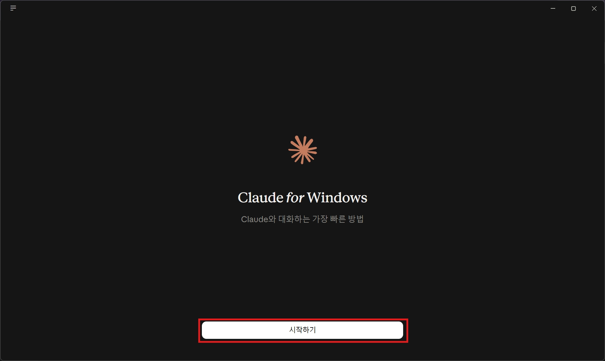
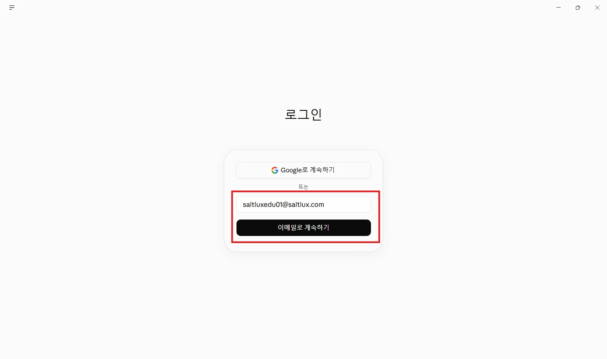
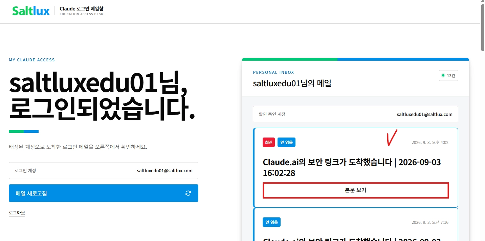
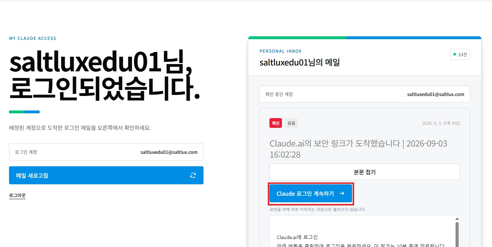
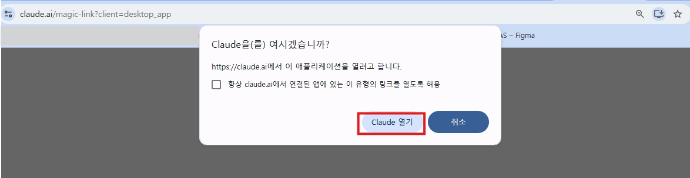
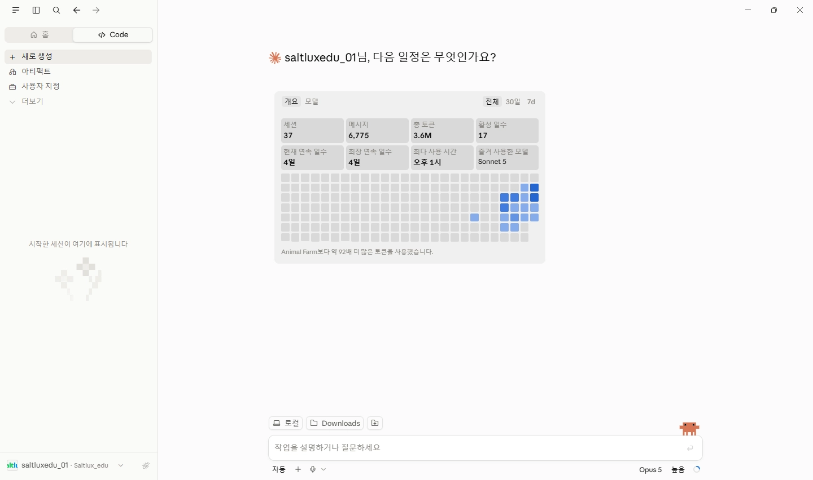

1
START
Claude Desktop 앱에서 ‘시작하기’를 누릅니다.
Claude Desktop에서 시작하기
Claude Desktop 앱을 실행하고 시작하기를 누릅니다. 앱을 설치하지 않았다면 상단의 다운로드 버튼을 먼저 이용해 주세요.

아래 순서대로 진행하면 교육용 계정 로그인을 완료할 수 있습니다.
Claude Desktop 앱을 실행하고 시작하기를 누릅니다. 앱을 설치하지 않았다면 상단의 다운로드 버튼을 먼저 이용해 주세요.

본인 수업 시간에 맞는 배정표를 열고, 본인에게 배정된 교육용 이메일과 개인 PIN을 확인합니다.
Claude 로그인 화면에 배정표에서 확인한 교육용 이메일을 붙여넣고 이메일로 계속하기를 누릅니다. Google로 계속하기는 선택하지 않습니다.

로그인 메일함 사이트에서 배정된 교육용 이메일과 개인 PIN을 입력한 뒤 내 메일함 열기를 누릅니다.
Claude 로그인 메일함내 메일함 열기 ↗메일함에서 가장 최근에 도착한 Anthropic 로그인 메일을 찾고 본문 보기를 누릅니다.

열린 메일 본문에서 파란색 Claude 로그인 계속하기 버튼을 누릅니다.

새로 열린 브라우저에서 앱 실행 팝업이 나타나면 Claude 열기를 선택합니다.

Claude Desktop이 열리면 화면 왼쪽 아래에서 교육용 계정으로 로그인되었는지 확인합니다.

계정 로그인 관련 문의사항은 교육 운영팀으로 보내 주세요.